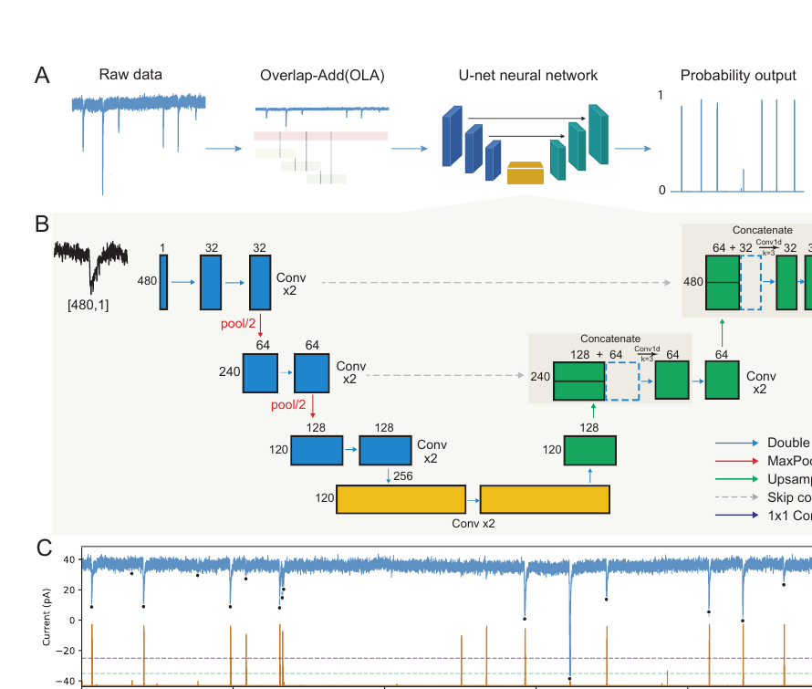
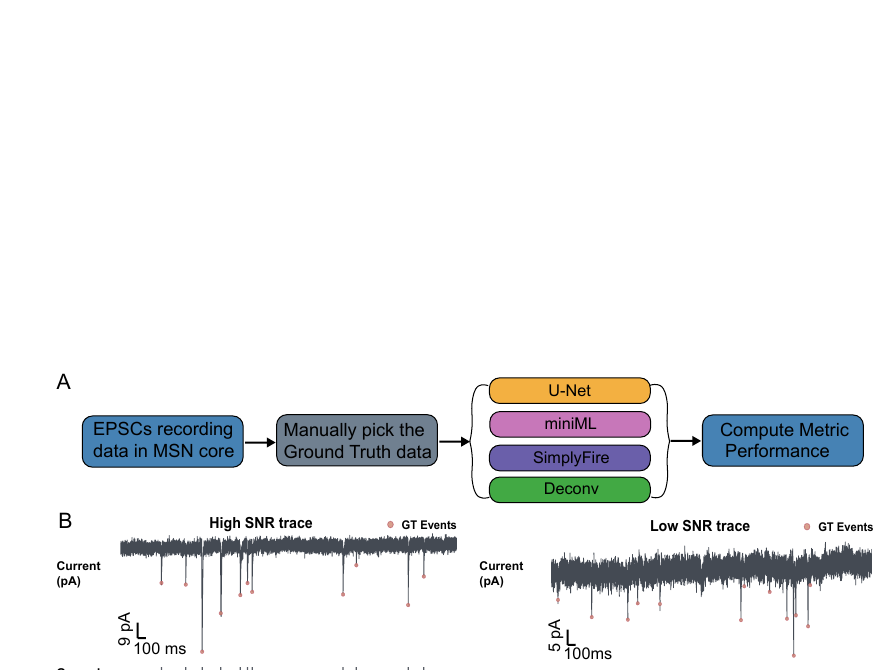
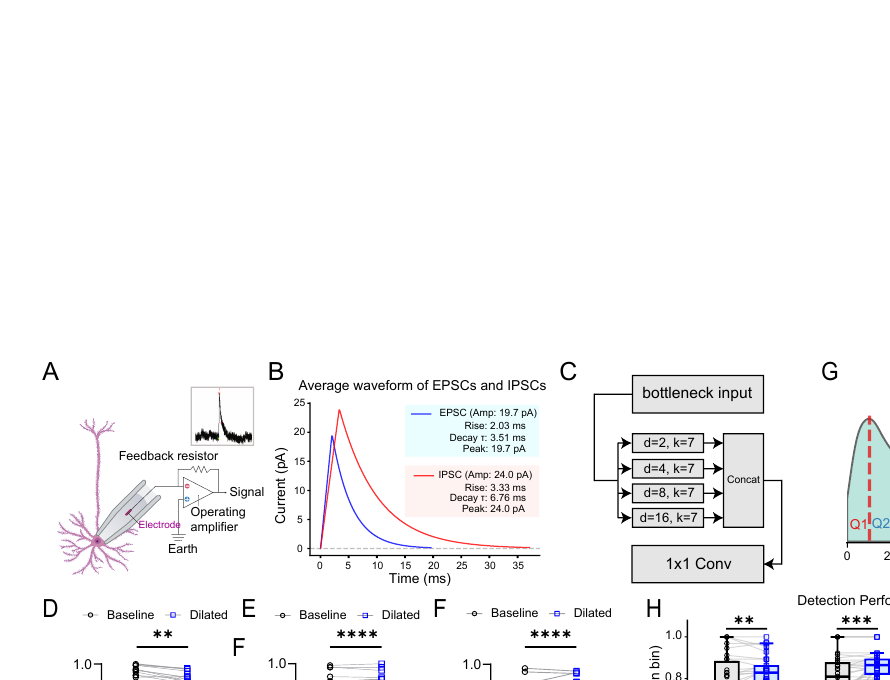
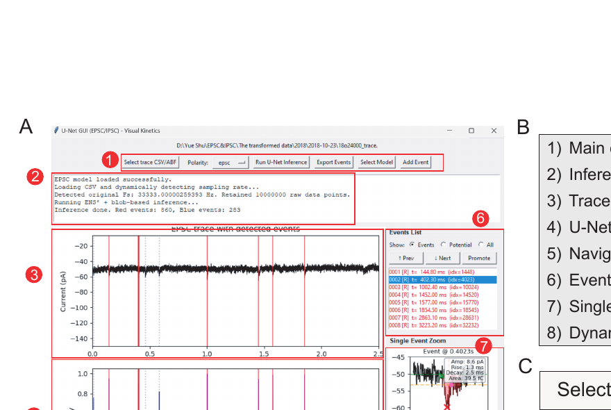

01
Morphology-centric normalization
Local min-max normalization reduces dependence on absolute amplitude and helps preserve sensitivity to small events.
An end-to-end framework for detecting EPSCs and IPSCs in noisy, long-duration patch-clamp recordings, with pointwise temporal localization, overlap-aware inference, and a researcher-friendly GUI.
The model predicts a continuous probability trace rather than assigning one label to each sliding window. Skip connections preserve event morphology, while overlap-add inference reconstructs a smooth full-length prediction.

Local min-max normalization reduces dependence on absolute amplitude and helps preserve sensitivity to small events.
A fixed low threshold and adaptive high-confidence threshold identify candidate probability blobs and event centers.
Overlapping windows and weighted reconstruction reduce boundary artifacts in recordings of arbitrary duration.
A parallel multi-scale bottleneck expands the receptive field for slower inhibitory-current kinetics.
Across 30 MSN recordings, the U-Net achieved the strongest overall F1 score among the evaluated approaches and was especially robust for overlapping and low-amplitude events.

Compared with 0.696 for SimplyFire, 0.679 for miniML, and 0.478 for deconvolution.
Improved separation of temporally adjacent events using dense pointwise prediction.
Brain-slice-trained EPSC model generalized to human brain organoid recordings.

The desktop GUI integrates trace loading, model inference, probability visualization, event navigation, manual verification, and CSV export.

Replace the provisional citation below with the final journal citation or preprint DOI when available.
@article{shu_unet_psc,
title={A deep learning framework for EPSC detection achieves superior accuracy and speed for high-throughput synaptic event analysis},
author={Shu, Yue and Zhang, Jingliang and Chen, Yunchong and Dadarlat, Maria C. and Yang, Yang},
year={2026},
note={Manuscript in preparation}
}